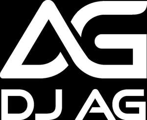
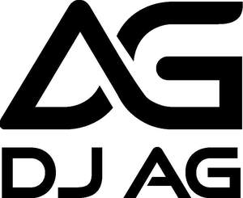

Trade Mark Journal No.2025/011 14 March 2025
UK00004168797 4 March 2025 (9,18,25,41)
Mark 1

Mark 2

- Class 9
- Downloadable mobile applications; downloadable music software; music streaming applications; software applications for mobile devices; software and apparatus for downloading, transmitting, receiving, providing, publishing, extracting, encoding, decoding, reading, storing and organizing audiovisual, videographic and written data; Application software; platform software; media streaming software; music software; content creation software; computer application software for streaming audio-visual media content via the Internet; downloadable and recorded content in the field of music, events, and festivals; streamable sound recordings; streamable music, videos, films, and audio-visual recordings; audio, video and audiovisual recordings downloadable from the internet; downloadable digital media; downloadable and recorded content; podcasts; downloadable podcasts; musical podcasts; audio tapes, video tapes, CDs, DVDs, optical storage discs, gramophone records, phonograph records featuring music; apparatus for recording, transmission or reproduction of sound or images; magnetic data carriers, recording discs; memory carriers; data carriers; headphones; Cases for headphones; turntables; amplifiers; record player turntables; speakers; wireless speakers; portable speakers; mobile phone speakers; speakers for record players; sound mixers; audio mixers; microphone mixers; video mixers; microphones; wireless speaker microphones; downloadable multimedia files; digital recordings; musical recordings; multimedia apparatus and instruments; prerecorded music videos; downloadable digital music, video and audio files; musical, sound, video and audiovisual recordings; downloadable video recordings featuring music; digital music downloadable from the internet; downloadable graphic art images; downloadable digital art images; mouse mats and pads; desk mats; protective films, cases, sleeves and covers for smartphones, laptops, e-book readers and tablet computers; downloadable digital music files authenticated by non-fungible tokens (NFTs); digital art images authenticated by NFTs; downloadable electronic data files featuring information, photos, images, videos, recorded footage, music, art, films, posters, avatars, badges, clothing, character skins, wallpapers, and merchandises in the field of music, events, and festivals authenticated by non-fungible tokens (NFTs).
- Class 18
- Bags; backpacks; sports bags; gym bags; rucksacks; bumbags; briefcases; holdalls; bags made of imitation leather; bags made of leather; beach bags; key bags; overnight bags; weekend bags; suit bags; tote bags; shopping bags; school bags; make up bags; cosmetic bags; toiletry bags; jewellery rolls for travel; hip bags; pouches; satchels; shoe bags; shoulder bags; sling bags; music cases; beauty cases; tie cases; umbrella covers; towelling bags; travelling bags; haversacks; Articles of luggage; Travel bags, suitcases, hold-alls, trunks and valises; belts; leather belts; cases for keys; purses; credit-card holders; card holders; card wallets; pocket cases; pocket wallets; credit card cases and holders; card cases.
- Class 25
- Clothing, footwear and headgear; Clothing, namely, shirts, vests, T-shirts, hoodies, sweatshirts, trousers, jogging suits, jeans, shorts, sports shorts, gym clothing, sports leggings, tracksuits, jumpers and cardigans, pullovers, knitwear, twinsets, neckties, scarfs, articles of outerwear, coats, jackets, bomber jackets, overalls; Clothing, namely, swimwear, beachwear, bikinis; underwear, boxer shorts, sleepwear, robes, pyjamas, headbands and wristbands; footwear, namely, boots, shoes, slippers, sandals, trainers, workout shoes and running shoes, beach shoes; headgear, namely, headbands, snapback hats, hats, caps, berets, earmuffs, visors, baseball caps, beanies; Baby Clothes; Children’s clothing.
- Class 41
- Entertainment services; Entertainment services provided by on-line streams; DJ services; TV and radio presenter services; Live music performances; television and radio entertainment services; musical performances; presentation of live performances, radio and music entertainment; digital music (not downloadable) provided from the Internet; online entertainment; Music composition services; Music publishing services; Music library services; recording services; music production; sound recording and video entertainment services; artistic direction of performing artists; providing entertainment information via a website; editing of radio programmes; selection and compilation of pre-recorded music for broadcasting by others; production of radio programmes; arranging of festivals for cultural and entertainment purposes; organisation of entertainment shows; booking of performing artists for events (services of promoter); education and entertainment services all relating to music and radio; education and training services relating to the music and entertainment industries; educational services relating to music and radio in the nature of development, creation, production and distribution of music; providing of training in the fields of music and music technology; education in the nature of providing classes, workshops, and seminars relating to music, online streams and radio; provision of education and entertainment by means of radio, satellite, cable, telephone, the worldwide web and the Internet; organization of competitions (education or entertainment); interactive telephone competitions; provision of game shows; Fan club services (entertainment); providing online (non-downloadable) electronic publications in the field of music, events, and festivals.
Ashley Anthony Gordon
Representative: Sheridans Solicitors